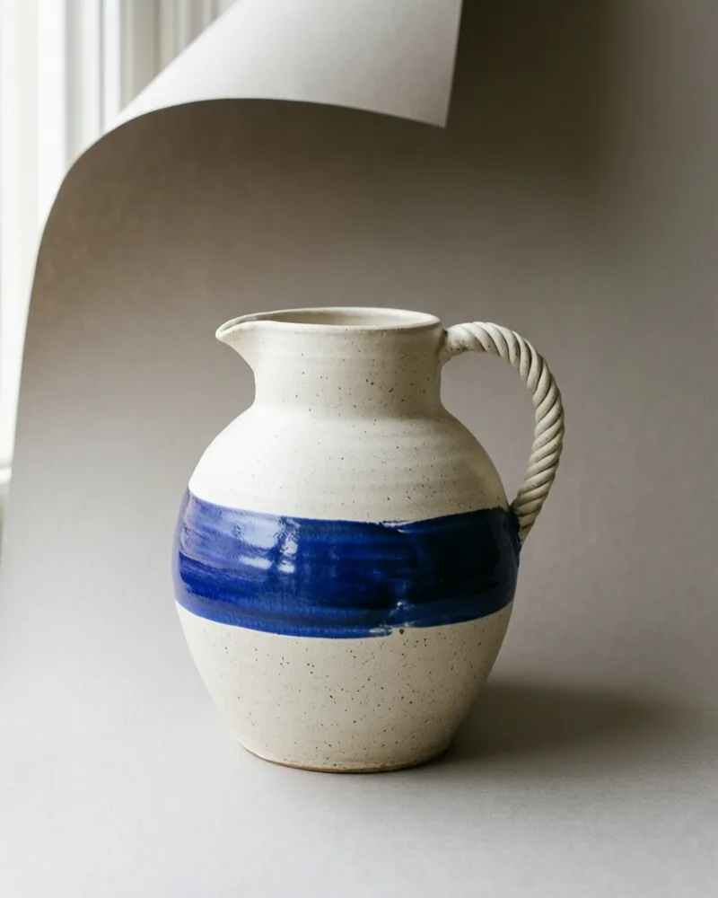
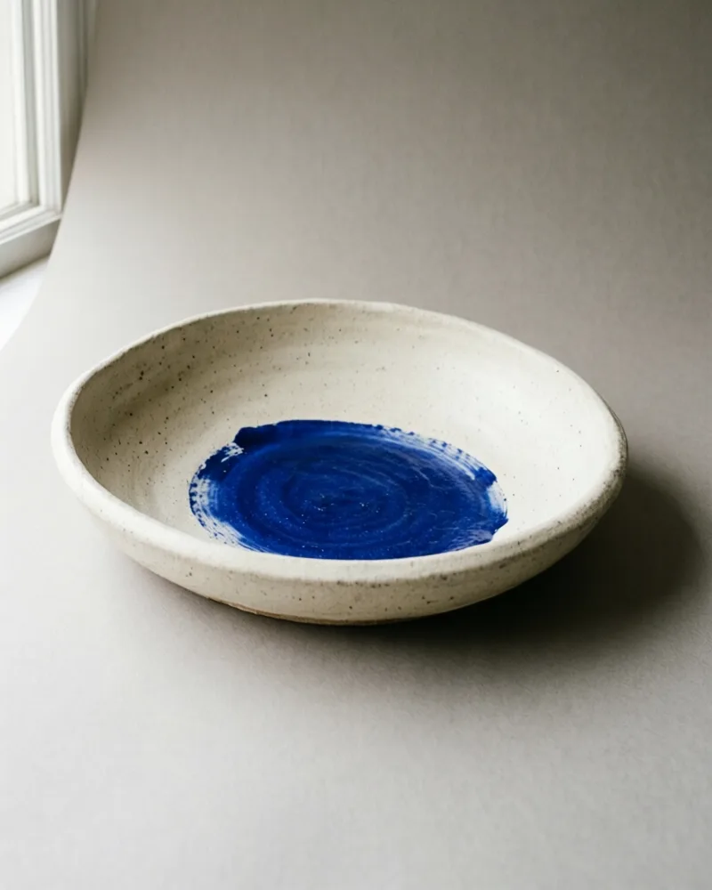
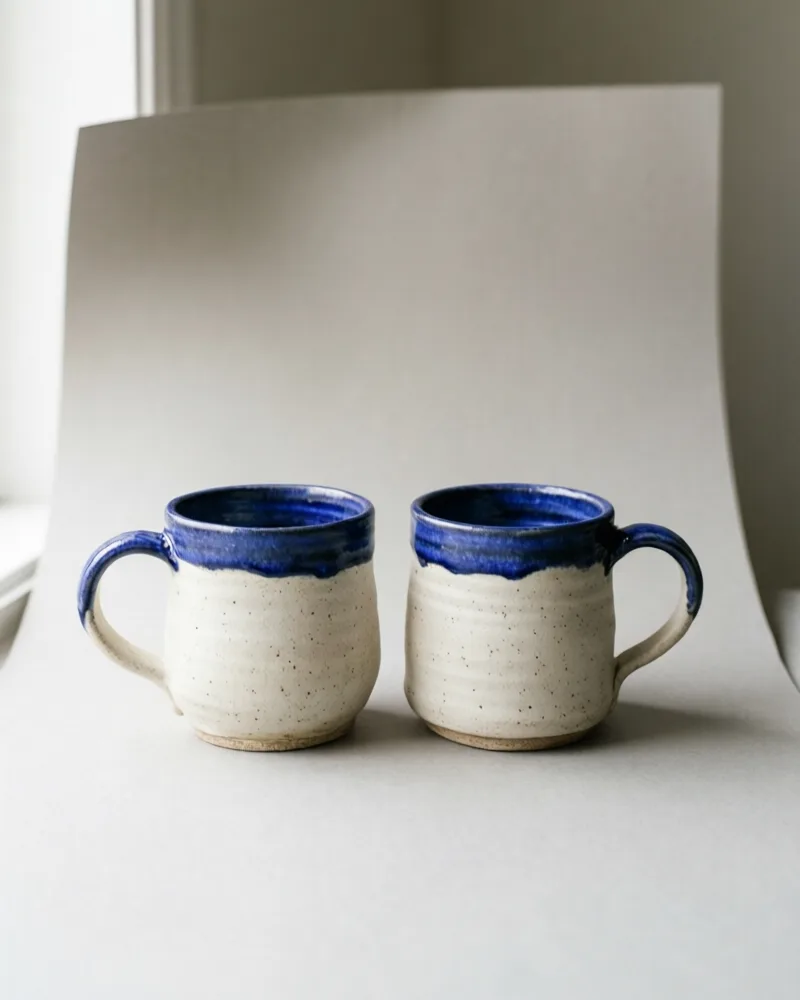
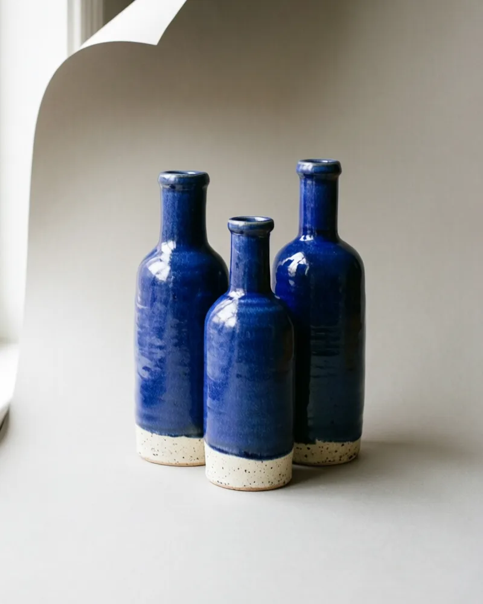

Small series and commissions, made in a studio in Sampletown.
Open for commissions




A set of plates, a vase for one shelf, a gift: tell me what it is for and where it will live.
A few lines, a photo of the place if you have one.
Within a week. Nothing is owed before you say yes.
Six to eight weeks, the time clay takes to dry and fire twice.